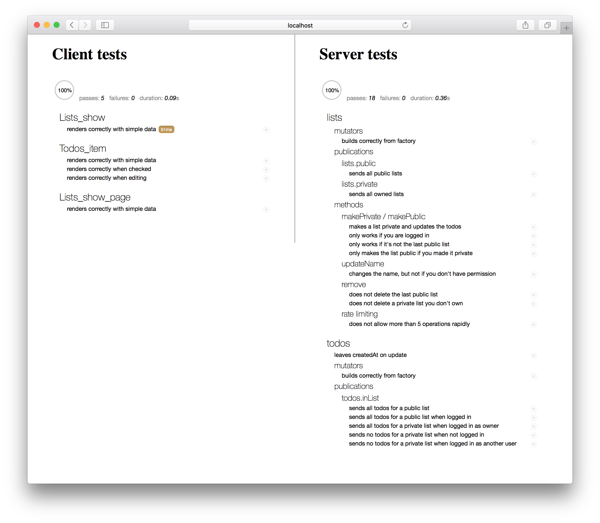

Introduction
소개
Testing allows you to ensure your application works the way you think it does, especially as your codebase changes over time. If you have good tests, you can refactor and rewrite code with confidence. Tests are also the most concrete form of documentation of expected behavior, since other developers can figure out how to use your code by reading the tests.
테스트를 통해 응용 프로그램이 생각대로 작동하는지 확인할 수 있습니다. 특히 코드베이스가 시간이 지남에 따라 변경됩니다. 좋은 테스트를 거쳤다면 자신감을 갖고 리팩토링하고 코드를 다시 작성할 수 있습니다. 테스트는 테스트를 읽음으로써 코드를 사용하는 방법을 다른 개발자가 알아낼 수 있기 때문에 테스트는 예상되는 동작을 문서화하는 가장 구체적인 형식이기도합니다.
Automated testing is critical because it allows you to run a far greater set of tests much more often than you could manually, allowing you to catch regression errors immediately.
자동화된 테스트는 수동으로 할 수있는 것보다 훨씬 더 많은 테스트를 훨씬 많이 실행할 수 있으므로 회귀 오류를 즉각적으로 발견 할 수 있기 때문에 중요합니다.
Types of tests
테스트 유형
Entire books have been written on the subject of testing, so we will simply touch on some basics of testing here. The important thing to consider when writing a test is what part of the application you are trying to test, and how you are verifying the behavior works.
Unit test: If you are testing one small module of your application, you are writing a unit test. You’ll need to stub and mock other modules that your module usually leverages in order to isolate each test. You’ll typically also need to spy on actions that the module takes to verify that they occur.
Integration test: If you are testing that multiple modules behave properly in concert, you are writing an integration test. Such tests are much more complex and may require running code both on the client and on the server to verify that communication across that divide is working as expected. Typically an integration test will still isolate a part of the entire application and directly verify results in code.
Acceptance test: If you want to write a test that can be run against any running version of your app and verifies at the browser level that the right things happen when you push the right buttons, then you are writing an acceptance test (sometimes called “end to end test”). Such tests typically try to hook into the application as little as possible, beyond perhaps setting up the right data to run a test against.
Load test: Finally you may wish to test that your application works under typical load or see how much load it can handle before it falls over. This is called a load test or stress test. Such tests can be challenging to set up and typically aren’t run often but are very important for confidence before a big production launch.
테스트라는 주제에 대해서는 이미 많은 책이 있으므로 여기서는 테스트에 대해 간단히 언급만 해 보겠습니다. 테스트를 작성할 때 고려해야 할 중요한 사항은 테스트하려는 응용 프로그램의 부분과 동작을 검증하는 방법입니다.
단위 테스트:하나의 작은 모듈을 테스트하는 경우 단위 테스트를 작성합니다. 각 테스트를 isolate(분리) 하기 위해 모듈이 일반적으로 활용하는 다른 모듈을 stub 하고 mock 해야합니다. 또한 일반적으로 모듈이 발생했는지 확인하기 위해 수행하는 작업에 대해 spy 작업을 수행해야합니다.
통합 테스트:여러 모듈이 제대로 작동하는지 테스트하는 경우 통합 테스트를 작성하고 있습니다. 이러한 테스트는 훨씬 복잡하며 클라이언트와 서버 모두에서 코드를 실행하여 해당 분할에서의 통신이 예상대로 작동하는지 확인해야 할 수 있습니다. 일반적으로 통합 테스트는 전체 응용 프로그램의 일부를 격리하고 결과를 코드로 직접 확인합니다.
수락 테스트:실행중인 앱 버전에 대해 실행할 수있는 테스트를 작성하고 브라우저 레벨에서 올바른 버튼을 누를 때 올바른 일이 발생하는지 확인한 다음 수락을 작성합니다 테스트 (“엔드 투 엔드 테스트”라고도 함). 이러한 테스트는 일반적으로 테스트를 실행하기에 적합한 데이터를 설정하는 것 이상의 응용 프로그램에 가능한 한 많이 연결하지 않으려고 시도합니다.
로드 테스트:마지막으로 응용 프로그램이 일반적인 로드에서 작동하는지 테스트하거나 뻗어버리기전에 처리 할 수있는 로드가 얼마나되는지 확인하고자 할 수 있습니다. 이를 부하 테스트 또는 스트레스 테스트 라고합니다. 이러한 테스트는 설정하기가 어려울 수 있으며 일반적으로 자주 실행되지는 않지만 대량 생산이 시작되기 전에 자신감에 있어 매우 중요합니다.
Challenges of testing in Meteor
Meteor에서의 테스트 과제
In most ways, testing a Meteor app is no different from testing any other full stack JavaScript application. However, compared to more traditional backend or front-end focused frameworks, two factors can make testing a little more challenging:
Client/server data: Meteor’s data system makes it simple to bridge the client-server gap and often allows you to build your application without thinking about how data moves around. It becomes critical to test that your code does actually work correctly across that gap. In traditional frameworks where you spend a lot of time thinking about interfaces between client and server you can often get away with testing both sides of the interface in isolation, but Meteor’s full app test mode makes it easy to write integration tests that cover the full stack. Another challenge here is creating test data in the client context; we’ll discuss ways to do this in the section on generating test data below.
Reactivity: Meteor’s reactivity system is “eventually consistent” in the sense that when you change a reactive input to the system, you’ll see the user interface change to reflect this some time later. This can be a challenge when testing, but there are some ways to wait until those changes happen to verify the results, for example
Tracker.afterFlush().
대부분의 경우, Meteor 앱을 테스트하는 것은 다른 전체 스택 JavaScript 애플리케이션을 테스트하는 것과 다르지 않습니다. 그러나보다 전통적인 백엔드 또는 프론트 엔드에 초점을 맞춘 프레임 워크와 비교할 때 두 가지 요인으로 인해 테스트가 좀 더 어려워 질 수 있습니다.
클라이언트/서버 데이터:Meteor의 데이터 시스템은 클라이언트-서버 갭을 메우는 것을 간단하게하며 데이터가 어떻게 움직이는지를 생각하지 않고 애플리케이션을 구축 할 수 있습니다. 코드가 실제로 해당 갭에서 올바르게 작동하는지 테스트하는 것이 중요합니다. Meteor의 full app test mode를 사용하면 클라이언트와 서버 간의 인터페이스에 대해 많은 시간을 생각하는 전통적인 프레임 워크에서 인터페이스의 양면을 별도로 테스트하면 쉽게 벗어날 수 있습니다. 전체 스택을 포괄하는 integration tests를 작성하십시오. 또 다른 도전 과제는 클라이언트 컨텍스트에서 테스트 데이터를 작성하는 것입니다. 아래의 section on generating test data에서 이 작업을 수행하는 방법을 설명합니다.
반응성:Meteor의 반응형 시스템은 반응성 입력을 시스템으로 변경하면 얼마 후 이것을 반영하는 사용자 인터페이스가 변경된다는 의미에서 “궁극적으로 일관성”이 있습니다. 이것은 테스트 할 때 어려울 수 있지만 결과를 확인하기 위해 변경 사항이 발생할 때까지 기다릴 수있는 몇 가지 방법이 있습니다. 예를들어
Tracker.afterFlush().
The ‘meteor test’ command
‘meteor test’ 명령
The primary way to test your application in Meteor is the meteor test command.
Meteor에서 응용 프로그램을 테스트하는 주요 방법은 meteor test 명령입니다.
This loads your application in a special “test mode”. What this does is:
- Doesn’t eagerly load any of our application code as Meteor normally would.
- Does eagerly load any file in our application (including in
imports/folders) that look like*.test[s].*, or*.spec[s].* - Sets the
Meteor.isTestflag to be true. - Starts up the test driver package (see below).
특수한 “테스트 모드”로 응용 프로그램을 로드합니다. 이것이 하는 일은 :
- Meteor가 일반적 으로하는 것처럼 애플리케이션 코드를 열심히 로드 하지 않습니다.
*.test[s].*또는*.spec[s].*처럼 보이는 우리의 응용 프로그램 (imports/폴더 포함)에 있는 파일을 열심히 로드합니다.- ‘Meteor.isTest` 플래그를 true로 설정합니다.
- 테스트 드라이버 패키지를 시작합니다 (아래 참조).
The Meteor build tool and the
meteor testcommand ignore any files located in anytests/directory. This allows you to put tests in this directory that you can run using a test runner outside of Meteor’s built-in test tools and still not have those files loaded in your application. See Meteor’s default file load order rules.Meteor build tool과
meteor test명령은tests/디렉토리에 있는 파일을 무시합니다. 이 디렉토리에 Meteor의 빌트인 테스트툴 밖에 있는 테스트 러너를 사용하여 실행할 수있는 테스트를이 애플리케이션에 로드할 필요가 없습니다. Meteor의 기본 파일로드 순서 규칙을 참조하십시오.
What this means is that you can write tests in files with a certain filename pattern and know they’ll not be included in normal builds of your app. When your app runs in test mode, those files will be loaded (and nothing else will), and they can import the modules you want to test. As we’ll see this is ideal for unit tests and default file load order.
이것이 의미하는 바는 특정 파일 이름 패턴을 가진 파일에 테스트를 작성하고 앱의 일반 빌드에 포함되지 않는다는 것을 알 수 있다는 것입니다. 앱이 테스트 모드에서 실행되면 해당 파일이로드되며 테스트 할 모듈을 가져올 수 있습니다. 여기서 알 수 있듯이 이것은 unit tests 및 default file load order에 이상적입니다.
Additionally, Meteor offers a “full application” test mode. You can run this with meteor test --full-app.
또한, Meteor는 “전체 어플리케이션”테스트 모드를 제공합니다. meteor test --full-app 명령으로 실행할 수 있습니다.
This is similar to test mode, with key differences:
- It loads test files matching
*.app-test[s].*and*.app-spec[s].*. - It does eagerly load our application code as Meteor normally would.
- Sets the
Meteor.isAppTestflag to be true (instead of theMeteor.isTestflag).
주요 차이점은 테스트 모드와 유사합니다.
1.*.app-test[s].* 및 *.app-spec[s].* 와 일치하는 테스트 파일을 로드합니다.
- Meteor가 일반적으로하는 것처럼 응용 프로그램 코드를 열심히 로드 합니다.
3.Meteor.isAppTest플래그를 (Meteor.isTest` 플래그 대신) true로 설정합니다.
This means that the entirety of your application (including for instance the web server and client side router) is loaded and will run as normal. This enables you to write much more complex integration tests and also load additional files for acceptance tests.
즉, 응용 프로그램 전체 (예:웹 서버 및 클라이언트 측 라우터 포함)가로드되고 정상적으로 실행됩니다. 이를 통해 훨씬 더 많은 complex integration tests를 작성하고 acceptance tests(수용 테스트)에 대한 추가 파일을 로드 할 수 있습니다.
Note that there is another test command in the Meteor tool; meteor test-packages is a way of testing Atmosphere packages, which is discussed in the Writing Packages article.
Meteor 도구에는 또 다른 테스트 명령이 있습니다. meteor test-packages 는 Writing Packages article에서 논의되는 Atmosphere 패키지를 테스트하는 방법입니다.
Driver packages
드라이버 패키지
When you run a meteor test command, you must provide a --driver-package argument. A test driver is a mini-application that runs in place of your app and runs each of your defined tests, whilst reporting the results in some kind of user interface.
meteor test 명령을 실행할 때 --driver-package 인자를 제공해야 합니다. 테스트 드라이버는 앱 대신 실행되고 정의 된 각 테스트를 실행하는 미니 애플리케이션으로, 일종의 사용자 인터페이스로 결과를 보고합니다.
There are two main kinds of test driver packages:
두 종류의 테스트 드라이버 패키지가 있습니다 :
Web reporters: Meteor applications that display a special test reporting web UI that you can view the test results in.
Web reporters: 테스트 결과를 볼 수있는 특별한 테스트 보고 웹 UI를 표시하는 Meteor 애플리케이션.

Console reporters: These run completely on the command-line and are primary used for automated testing like continuous integration (as we’ll see, typically PhantomJS is used to drive such tests).
Console reporters:명령 행에서 완전히 실행되며 continuous integration 과 같은 자동 테스트에 주로 사용됩니다 (일반적으로 PhantomJS가 이러한 테스트를 수행하는 데 사용됩니다).
Recommended: Mocha
추천: Mocha
In this article, we’ll use the popular Mocha test runner alongside the Chai assertion library to test our application. In order to write and run tests in Mocha, we need to add an appropriate test driver package.
이 기사에서는 인기있는 Mocha 테스트 러너를 Chai 어설 션 라이브러리와 함께 사용하여 애플리케이션을 테스트합니다. 모카에서 테스트를 작성하고 실행하려면 적절한 테스트 드라이버 패키지를 추가해야합니다.
There are several options. Choose the ones that makes sense for your app. You may depend on more than one and set up different test commands for different situations.
- practicalmeteor:mocha Runs client and server package or app tests and displays all results in a browser. Use spacejam for command line/CI support.
- dispatch:mocha-phantomjs Runs client and server package or app tests using PhantomJS and reports all results in the server console. Can be used for running tests on a CI server. Has a watch mode.
- dispatch:mocha-browser Runs client and server package or app tests with Mocha reporting client results in a web browser and server results in the server console. Has a watch mode.
- dispatch:mocha Runs server-only package or app tests with Mocha and reports all results in the server console. Can be used for running tests on a CI server. Has a watch mode.
몇 가지 옵션이 있습니다. 앱에 적합한 것을 선택하십시오. 둘 이상에 의존하고 상황에 따라 다른 테스트 명령을 설정할 수 있습니다.
- practicalmeteor:mocha 클라이언트 및 서버 패키지 또는 app 테스트를 실행하고 모든 결과를 브라우저에 표시합니다. 명령 행/CI 지원은 spacejam을 사용하십시오.
- dispatch:mocha-phantomjs PhantomJS를 사용하여 클라이언트 및 서버 패키지 또는 응용 프로그램 테스트를 실행하고 모든 결과를 서버 콘솔에보고합니다. CI 서버에서 테스트를 실행하는 데 사용할 수 있습니다. 시계 모드 있음.
- dispatch:mocha-browser Mocha보고 클라이언트 결과로 클라이언트 및 서버 패키지 또는 응용 프로그램 테스트를 실행하고 웹 브라우저에서 서버 결과를 서버 콘솔에 표시합니다. 시계 모드 있음.
- dispatch:mocha 모카와 함께 서버 전용 패키지 또는 앱 테스트를 실행하고 모든 결과를 서버 콘솔에보고합니다. CI 서버에서 테스트를 실행하는 데 사용할 수 있습니다. 시계 모드 있음.
These packages don’t do anything in development or production mode. They declare themselves testOnly so they are not even loaded outside of testing. But when our app is run in test mode, the test driver package takes over, executing test code on both the client and server, and rendering results to the browser.
이 패키지는 개발 또는 생산 모드에서는 아무 것도하지 않습니다. 그들은 스스로 testOnly를 선언하므로 테스트를하지 않아도로드됩니다. 그러나 우리의 앱이 test mode에서 실행되면 테스트 드라이버 패키지가 인계 받아 클라이언트와 서버 모두에서 테스트 코드가 실행되고 결과가 브라우저에 렌더링됩니다.
Here’s how we can add the practicalmeteor:mocha package to our app:
다음은 우리 앱에 practicalmeteor:mocha 패키지를 추가하는 방법입니다.
1 | meteor add practicalmeteor:mocha |
Test Files
테스트 파일
Test files themselves (for example a file named todos-item.test.js or routing.app-specs.coffee) can register themselves to be run by the test driver in the usual way for that testing library. For Mocha, that’s by using describe and it:
테스트 파일 자체는 (예를 들어todos-item.test.js 또는routing.app-specs.coffee라는 파일) 테스트 라이브러리가 평소와 같이 테스트 드라이버에 의해 실행되도록 등록 할 수 있습니다. 모카는describe와it을 사용합니다 :
1 | describe('my module', function () { |
Note that arrow function use with Mocha is discouraged.
Mocha와 함께 화살표 기능을 사용하는 것은 권장되지 않습니다..
Test data
테스트 데이터
When your app is run in test mode, it is initialized with a clean test database.
앱이 테스트 모드로 실행되면 클린 테스트 데이터베이스로 초기화됩니다.
If you are running a test that relies on using the database, and specifically the content of the database, you’ll need to perform some setup steps in your test to ensure the database is in the state you expect. There are some tools you can use to do this.
데이터베이스 사용에 의존하는 테스트, 특히 데이터베이스의 내용을 사용하는 경우 테스트에서 setup 단계를 수행하여 데이터베이스가 예상 한 상태에 있는지 확인해야합니다. 이를 수행하는 데 사용할 수있는 도구가 있습니다.
To ensure the database is clean, the xolvio:cleaner package is useful. You can use it to reset the database in a beforeEach block:
데이터베이스가 깨끗한 지 확인하려면 xolvio:cleaner 패키지가 유용합니다. beforeEach 블록에서 데이터베이스를 리셋하는데 사용할 수 있습니다 :
1 | import { resetDatabase } from 'meteor/xolvio:cleaner'; |
This technique will only work on the server. If you need to reset the database from a client test, you can use a method to do so:
이 기술은 서버에서만 작동합니다. 클라이언트 테스트에서 데이터베이스를 재설정해야하는 경우 메소드를 사용하여 수행 할 수 있습니다.
1 | import { resetDatabase } from 'meteor/xolvio:cleaner'; |
As we’ve placed the code above in a test file, it will not load in normal development or production mode (which would be an incredibly bad thing!). If you create a Atmosphere package with a similar feature, you should mark it as testOnly and it will similarly only load in test mode.
위의 코드를 테스트 파일에 배치 했으므로 표준 개발 모드 나 생산 모드에서는로드되지 않습니다 (엄청나게 나쁜 일입니다!). 유사한 기능을 가진 Atmosphere 패키지를 생성한다면,이를 ‘testOnly’로 표시해야하며 마찬가지로 테스트 모드로만로드됩니다.
Generating test data
테스트 데이터 생성
Often it’s sensible to create a set of data to run your test against. You can use standard insert() calls against your collections to do this, but often it’s easier to create factories which help encode random test data. A great package to use to do this is dburles:factory.
종종 테스트를 실행하기 위해 일련의 데이터를 만드는 것이 현명합니다. 콜렉션에 대해 표준 insert() 호출을 사용하여이를 수행 할 수 있지만 종종 무작위 테스트 데이터를 인코딩하는 데 도움이되는 factories 를 만드는 것이 더 쉽습니다. 이것을 하기위한 훌륭한 패키지는 dburles:factory 입니다.
In the Todos example app, we define a factory to describe how to create a test todo item, using the faker npm package:
Todos 예제 애플리케이션에서는 faker를 사용하여 테스트 대상 항목을 만드는 방법을 설명하는 팩토리를 정의합니다.) npm 패키지 :
1 | import faker from 'faker'; |
To use the factory in a test, we simply call Factory.create:
테스트에서 팩토리를 사용하려면 단순히 Factory.create를 호출하면된다.
1 | // This creates a todo and a list in the database and returns the todo. |
Mocking the database
As Factory.create directly inserts documents into the collection that’s passed into the Factory.define function, it can be a problem to use it on the client. However there’s a neat isolation trick that you can do to replace the server-backed Todos client collection with a mocked out local collection, that’s encoded in the hwillson:stub-collections package.
Factory.create는 Factory.define 함수에 전달 된 콜렉션에 직접 문서를 삽입하기 때문에 클라이언트에서 사용하는 것이 문제가 될 수 있습니다. 그러나 서버 기반 Todos client collection 을 모형으로 만든 local collection 으로 대체 할 수있는 깔끔한 격리 트릭이 있습니다. 그것은 hwillson:stub-collections 패키지로 인코딩되어 있습니다.
1 | import StubCollections from 'meteor/hwillson:stub-collections'; |
In a Mocha test, it makes sense to use stub-collections in a beforeEach/afterEach block.
Mocha 테스트에서beforeEach /afterEach 블록에`stub-collections ‘을 사용하는 것이 합리적입니다.
Unit testing
단위 테스트
Unit testing is the process of isolating a section of code and then testing that the internals of that section work as you expect. As we’ve split our code base up into ES2015 modules it’s natural to test those modules one at a time.
단위 테스트는 코드 섹션을 분리 한 다음 해당 섹션의 내부가 예상대로 작동하는지 테스트하는 프로세스입니다. 코드 기반을 ES2015 모듈로 분할했습니다 한 번에 하나씩 모듈을 테스트하는 것이 자연 스럽습니다.
By isolating a module and simply testing its internal functionality, we can write tests that are fast and accurate—they can quickly tell you where a problem in your application lies. Note however that incomplete unit tests can often hide bugs because of the way they stub out dependencies. For that reason it’s useful to combine unit tests with slower (and perhaps less commonly run) integration and acceptance tests.
모듈을 분리하고 내부 기능을 테스트함으로써 신속하고 정확한 * 테스트를 작성하여 응용 프로그램의 문제가있는 곳을 신속하게 알려줄 수 있습니다. 그러나 불완전한 유닛 테스트는 종속물을 떼어 내기 때문에 버그를 숨길 수 있습니다. 이러한 이유 때문에 단위 테스트를 통합 및 수용 테스트의 속도가 느린 (또는 덜 일반적으로 실행되는) 테스트와 결합하는 것이 유용합니다.
A simple Blaze unit test
간단한 Blaze 단위 테스트
In the Todos example app, thanks to the fact that we’ve split our User Interface into smart and reusable components, it’s natural to want to unit test some of our reusable components (we’ll see below how to integration test our smart components).
Todos 예제 앱에서는 사용자 인터페이스를 스마트하고 재사용 가능한 구성 요소로 분할했기 때문에 재사용 가능한 구성 요소의 단위 테스트를 원한다면 자연 스럽습니다 (스마트 구성 요소의 통합 테스트 방법 참조).
To do so, we’ll use a very simple test helper that renders a Blaze component off-screen with a given data context. As we place it in imports, it won’t load in our app by in normal mode (as it’s not required anywhere).
이를 위해 Blaze 구성 요소를 주어진 데이터 컨텍스트로 화면 밖으로 렌더링하는 매우 간단한 테스트 도우미를 사용합니다. 우리가`imports ‘에 넣었던 것처럼, 앱이 정상 모드로로드되지 않습니다 (어디에서나 필요하지 않음).
1 | import { _ } from 'meteor/underscore'; |
A simple example of a reusable component to test is the Todos_item template. Here’s what a unit test looks like (you can see some others in the app repository).
imports/ui/components/client/todos-item.tests.js:
테스트 할 재사용 가능한 구성 요소의 간단한 예제는 Todos_item 템플릿입니다. 단위 테스트는 다음과 같습니다 (일부 앱 저장소의 다른 부분). 참조).
imports/ui/components/client/todos-item.tests.js:
1 | /* eslint-env mocha */ |
Of particular interest in this test is the following:
이 테스트에서 특히 중요한 점은 다음과 같습니다.
Importing
임포팅
When we run our app in test mode, only our test files will be eagerly loaded. In particular, this means that in order to use our templates, we need to import them! In this test, we import todos-item.js, which itself imports todos.html (yes, you do need to import the HTML files of your Blaze templates!)
테스트 모드에서 앱을 실행하면 테스트 파일 만 열심히로드됩니다. 특히 템플릿을 사용하려면 템플릿을 가져와야합니다. 이 테스트에서는todos-item.js 파일을 가져옵니다.이 파일은todos.html 파일을 가져옵니다 (예, Blaze 템플릿의 HTML 파일을 가져와야합니다!).
Stubbing
스터빙
To be a unit test, we must stub out the dependencies of the module. In this case, thanks to the way we’ve isolated our code into a reusable component, there’s not much to do; principally we need to stub out the {{_}} helper that’s created by the tap:i18n system. Note that we stub it out in a beforeEach and restore it the afterEach.
단위 테스트가 되려면 모듈의 종속성을 철저히 분석해야합니다. 이 경우 코드를 재사용 가능한 구성 요소로 분리 한 덕분에별로 할 일이 없습니다. 기본적으로 우리는 tap:i18n 시스템에 의해 생성 된{{_}} 헬퍼를 작성해야 합니다. 우리가 beforeEach 에서 그것을 스텁하고 afterEach 를 복원한다는 것을 주목하십시오.
If you’re testing code that makes use of globals, you’ll need to import those globals. For instance if you have a global Todos collection and are testing this file:
전역 변수를 사용하는 코드를 테스트하는 경우 해당 전역 변수를 가져와야합니다. 예를 들어, 전역Todos 콜렉션을 가지고 있고이 파일을 테스트하고 있다면 :
1 | // logging.js |
then you’ll need to import Todos both in that file and in the test:
그 파일과 테스트에서 Todos 파일을 모두 가져와야 합니다 :
1 | // logging.js |
1 | // logging.test.js |
Creating data
데이터 생성
We can use the Factory package’s .build() API to create a test document without inserting it into any collection. As we’ve been careful not to call out to any collections directly in the reusable component, we can pass the built todo document directly into the template.
Factory 패키지의 .build()API를 사용하여 테스트 문서를 어떤 콜렉션에도 삽입하지 않고 생성 할 수 있습니다. 재사용 가능한 컴포넌트에서 직접 콜렉션을 호출하지 않도록주의 했으므로 빌드 된todo 문서를 템플릿에 직접 전달할 수 있습니다.
A simple React unit test
간단한 React 유닛 테스트
We can also apply the same structure to testing React components and recommend the Enzyme package, which simulates a React component’s environment and allows you to query it using CSS selectors. A larger suite of tests is available in the react branch of the Todos app, but let’s look at a simple example for now:
우리는 React 구성 요소를 테스트하는 데에도 동일한 구조를 적용 할 수 있으며 Enzyme 패키지를 추천합니다. 이 패키지는 React 구성 요소의 환경을 시뮬레이트하고 CSS 선택기를 사용하여 쿼리 할 수 있도록합니다. 더 큰 테스트 세트는 Todos 앱의 react 브랜치에서 사용할 수 있지만 지금은 간단한 예를 살펴 보겠습니다.
1 | import { Factory } from 'meteor/dburles:factory'; |
The test is slightly simpler than the Blaze version above because the React sample app is not internationalized. Otherwise, it’s conceptually identical. We use Enzyme’s shallow function to render the TodoItem component, and the resulting object to query the document, and also to simulate user interactions. And here’s an example of simulating a user checking the todo item:
React 샘플 앱이 국제화되지 않았기 때문에 테스트는 위의 Blaze 버전보다 약간 간단합니다. 그렇지 않으면 개념적으로 동일합니다. 우리는 Enzyme의 shallow 함수를 사용하여 TodoItem 컴포넌트를 렌더링하고 결과 객체는 문서를 질의하고 사용자 상호 작용을 시뮬레이션합니다. 다음은 todo 항목을 검사하는 사용자를 시뮬레이트하는 예제입니다.
1 | import { Factory } from 'meteor/dburles:factory'; |
In this case, the TodoItem component calls a Meteor Method setCheckedStatus when the user clicks, but this is a unit test so there’s no server running. So we stub it out using Sinon. After we simulate the click, we verify that the stub was called with the correct arguments. Finally, we clean up the stub and restore the original method behavior.
이 경우,TodoItem 컴포넌트는 사용자가 클릭 할 때 meteor 메소드setCheckedStatus를 호출하지만 이것은 단위 테스트이므로 서버가 실행되고 있지 않습니다. 그래서 우리는 Sinon을 사용하여 그것을 뽑습니다. 클릭을 시뮬레이션 한 후 올바른 인수로 스텁이 호출되었는지 확인합니다. 마지막으로 스텁을 정리하고 원래 메서드 동작을 복원합니다.
Running unit tests
단위 테스트 실행
To run the tests that our app defines, we run our app in test mode:
앱이 정의한 테스트를 실행하기 위해 테스트 모드에서 앱을 실행합니다.
1 | meteor test --driver-package practicalmeteor:mocha |
As we’ve defined a test file (imports/todos/todos.tests.js), what this means is that the file above will be eagerly loaded, adding the 'builds correctly from factory' test to the Mocha registry.
테스트 파일 (imports/todos/todos.tests.js)을 정의 했으므로 위의 파일을 열심히로드하고공장에서 정확하게 빌드합니다라는 테스트를 Mocha 레지스트리에 추가합니다 .
To run the tests, visit http://localhost:3000 in your browser. This kicks off practicalmeteor:mocha, which runs your tests both in the browser and on the server. It displays the test results in the browser in a Mocha test reporter:
테스트를 실행하려면 브라우저에서 http://localhost:3000을 방문하십시오. 이것은 브라우저와 서버에서 테스트를 실행하는 practicalmeteor:mocha를 시작합니다. 모카 테스트 기자의 브라우저에 테스트 결과를 표시합니다.
Usually, while developing an application, it makes sense to run meteor test on a second port (say 3100), while also running your main application in a separate process:
일반적으로 응용 프로그램을 개발하는 동안 두 번째 포트 (3100)에서 meteor test 를 실행하는 동시에 주 응용 프로그램을 별도의 프로세스로 실행하는 것이 좋습니다.
1 | # in one terminal window |
Then you can open two browser windows to see the app in action while also ensuring that you don’t break any tests as you make changes.
그런 다음 두 개의 브라우저 창을 열어 앱이 실제로 작동하는지 확인하고 변경 사항을 적용 할 때 테스트를 중단하지 않도록 할 수 있습니다.
Isolation techniques
격리 기술
In the unit tests above we saw a very limited example of how to isolate a module from the larger app. This is critical for proper unit testing. Some other utilities and techniques include:
The
velocity:meteor-stubspackage, which creates simple stubs for most Meteor core objects.Alternatively, you can also use tools like Sinon to stub things directly, as we’ll see for example in our simple integration test.
The
hwillson:stub-collectionspackage we mentioned above.위의 단위 테스트 에서 우리는 더 큰 앱에서 모듈을 분리하는 방법에 대한 매우 제한된 예를 보았습니다. 이것은 적절한 단위 테스트에 중요합니다. 다른 유틸리티 및 기법은 다음과 같습니다.
대부분의 Meteor 코어 객체에 대해 간단한 스텁을 생성하는
velocity:meteor-stubs패키지.또는 Sinon과 같은 도구를 사용하여 직접적으로 스텁을 작성할 수도 있습니다. 예를 들어 단순 통합 테스트에서 볼 수 있습니다.
above 에서 언급 한
hwillson:stub-collections패키지
There’s a lot of scope for better isolation and testing utilities.
더 나은 격리 및 테스트 유틸리티를위한 범위가 많이 있습니다.
Testing publications
출판물 테스트
Using the johanbrook:publication-collector package, you’re able to test individual publication’s output without needing to create a traditional subscription:
johanbrook:publication-collector 패키지를 사용하면 기존 구독을 만들 필요없이 개별 발행물의 출력을 테스트 할 수 있습니다.
1 | describe('lists.public', function () { |
Note that user documents – ones that you would normally query with Meteor.users.find() – will be available as the key users on the dictionary passed from a PublicationCollector.collect() call. See the tests in the package for more details.
사용자 문서 (보통Meteor.users.find()로 질의하는 사용자 문서는PublicationCollector.collect()호출에서 전달 된 사전의 키users로 사용 가능합니다. 자세한 내용은 패키지의 tests를 참조하십시오.
Integration testing
통합 테스트
An integration test is a test that crosses module boundaries. In the simplest case, this simply means something very similar to a unit test, where you perform your isolation around multiple modules, creating a non-singular “system under test”.
통합 테스트는 모듈 경계를 넘는 테스트입니다. 가장 단순한 경우, 이는 단순히 단위 테스트와 매우 유사한 의미를 가지며, 여러 모듈 주위에서 격리를 수행하여 비표준 “시스템 테스트 중”을 만듭니다.
Although conceptually different to unit tests, such tests typically do not need to be run any differently to unit tests and can use the same meteor test mode and isolation techniques as we use for unit tests.
단위 테스트와는 개념적으로 다르지만 일반적으로 이러한 테스트는 단위 테스트와 다르게 실행될 필요가 없으며 동일한 유성 테스트 모드 (#running-unit-tests)와 격리 기술 (#isolation- 기술)을 사용합니다.
However, an integration test that crosses the client-server boundary of a Meteor application (where the modules under test cross that boundary) requires a different testing infrastructure, namely Meteor’s “full app” testing mode.
그러나, Meteor 어플리케이션 (테스트중인 모듈이 그 경계를 넘는)의 클라이언트 - 서버 경계를 넘는 통합 테스트는 Meteor의 “전체 어플리케이션”테스트 모드와 같은 다른 테스트 인프라가 필요합니다.
Let’s take a look at example of both kinds of tests.
두 종류의 테스트에 대한 예를 살펴 보겠습니다.
Simple integration test
간단한 통합 테스트
Our reusable components were a natural fit for a unit test; similarly our smart components tend to require an integration test to really be exercised properly, as the job of a smart component is to bring data together and supply it to a reusable component.
재사용 가능한 구성 요소는 단위 테스트를위한 자연스러운 적합성이었습니다. 마찬가지로 스마트 구성 요소의 작업은 데이터를 모아 재사용 가능한 구성 요소에 공급하기 때문에 스마트 구성 요소는 실제로 제대로 작동하려면 통합 테스트가 필요합니다.
In the Todos example app, we have an integration test for the Lists_show_page smart component. This test simply ensures that when the correct data is present in the database, the template renders correctly – that it is gathering the correct data as we expect. It isolates the rendering tree from the more complex data subscription part of the Meteor stack. If we wanted to test that the subscription side of things was working in concert with the smart component, we’d need to write a full app integration test.
imports/ui/components/client/todos-item.tests.js:
Todos 예제 애플리케이션에는 Lists_show_page 스마트 컴포넌트에 대한 통합 테스트가 있습니다. 이 테스트는 데이터베이스에 올바른 데이터가있을 때 템플릿이 올바르게 렌더링되도록합니다. 예상 한대로 올바른 데이터를 수집합니다. Meteor 스택의 더 복잡한 데이터 구독 부분에서 렌더링 트리를 분리합니다. 구독 항목이 스마트 구성 요소와 함께 작동하는지 테스트하려는 경우 전체 앱 통합 테스트를 작성해야합니다.
imports/ui/components/client/todos-item.tests.js:
1 | /* eslint-env mocha */ |
Of particular interest in this test is the following:
이 테스트에서 특히 중요한 점은 다음과 같습니다.
Importing
임포팅
As we’ll run this test in the same way that we did our unit test, we need to import the relevant modules under test in the same way that we did in the unit test.
우리가 단위 테스트를 한 것과 같은 방식으로이 테스트를 실행할 것이므로, 우리는 단위 테스트에서 했던 것과 같은 방법으로 테스트중인 관련 모듈을 가져와야합니다.
Stubbing
스터빙
As the system under test in our integration test has a larger surface area, we need to stub out a few more points of integration with the rest of the stack. Of particular interest here is our use of the hwillson:stub-collections package and of Sinon to stub out Flow Router and our Subscription.
통합 테스트에서 테스트중인 시스템의 표면적이 더 크기 때문에 스택의 나머지 부분과 더 많은 통합 지점을 작성해야합니다. 여기서 특히 흥미로운 것은 hwillson:stub-collections 패키지와 Sinon을 사용하여 플로우 라우터와 서브 스크립 션을 스텁링하는 것입니다.
Creating data
데이터 생성
In this test, we used Factory package’s .create() API, which inserts data into the real collection. However, as we’ve proxied all of the Todos and Lists collection methods onto a local collection (this is what hwillson:stub-collections is doing), we won’t run into any problems with trying to perform inserts from the client.
이 테스트에서는 Factory 패키지의 .create() API를 사용하여 데이터를 실제 컬렉션에 삽입했습니다. 그러나, Todos 와 Lists 콜렉션 메소드를 로컬 콜렉션에 프로비저닝 했으므로 (hwillson:stub-collections이 수행하는 것입니다.), 우리는 수행하려고 시도 할 때 어떤 문제도 일으키지 않을 것입니다 클라이언트에서 삽입합니다.
This integration test can be run the exact same way as we ran unit tests above.
이 통합 테스트는 위의 단위 테스트 와 동일한 방식으로 실행될 수 있습니다.
Full-app integration test
전체 앱 통합 테스트
In the Todos example application, we have a integration test which ensures that we see the full contents of a list when we route to it, which demonstrates a few techniques of integration tests.
imports/startup/client/routes.app-test.js:
Todos 예제 애플리케이션에는 라우팅 할 때 목록의 전체 내용을 볼 수있는 통합 테스트가 있습니다. 이 테스트는 몇 가지 통합 기술을 보여줍니다.
imports/startup/client/routes.app-test.js :
1 | /* eslint-env mocha */ |
Of note here:
Before running, each test sets up the data it needs using the
generateDatahelper (see the section on creating integration test data for more detail) then goes to the homepage.Although Flow Router doesn’t take a done callback, we can use
Tracker.afterFlushto wait for all its reactive consequences to occur.Here we wrote a little utility (which could be abstracted into a general package) to wait for all the subscriptions which are created by the route change (the
todos.inListsubscription in this case) to become ready before checking their data.여기서 주목할 사항 :
실행하기 전에 각 테스트는 generateData 헬퍼를 사용하여 필요한 데이터를 설정합니다 (자세한 내용은 integration testing data 작성에 관한 섹션 참조). 그런 다음 홈페이지로 이동합니다.
플로우 라우터는 완료 콜백을하지 않지만, 우리는
Tracker.afterFlush를 사용하여 모든 반응 결과가 발생할 때까지 기다릴 수 있습니다.여기서 우리는 라우트 변경 (이 경우
todos.inList구독)에 의해 생성 된 모든 구독이 그들의 데이터를 검사하기 전에 준비 될 때까지 기다릴 수있는 작은 유틸리티 (일반 패키지로 추상화 될 수 있음)를 작성했습니다.
Running full-app tests
전체 앱 테스트 실행
To run the full-app tests in our application, we run:
응용 프로그램에서 full-app tests 를 실행하기 위해 다음을 실행합니다.
1 | meteor test --full-app --driver-package practicalmeteor:mocha |
When we connect to the test instance in a browser, we want to render a testing UI rather than our app UI, so the mocha-web-reporter package will hide any UI of our application and overlay it with its own. However the app continues to behave as normal, so we are able to route around and check the correct data is loaded.
우리가 브라우저에서 테스트 인스턴스에 연결할 때, 우리는 우리의 어플리케이션 UI가 아닌 테스팅 UI를 렌더링하기를 원한다. 그래서 mocha-web-reporter 패키지는 우리 어플리케이션의 UI를 숨기고 그것을 자신의 것으로 오버레이 할 것이다. 그러나 앱은 계속 정상적으로 작동하므로 올바른 경로로 데이터가로드되었는지 확인할 수 있습니다.
Creating data
데이터 작성
To create test data in full-app test mode, it usually makes sense to create some special test methods which we can call from the client side. Usually when testing a full app, we want to make sure the publications are sending through the correct data (as we do in this test), and so it’s not sufficient to stub out the collections and place synthetic data in them. Instead we’ll want to actually create data on the server and let it be published.
Full-app 테스트 모드로 테스트 데이터를 생성하기 위해서는 클라이언트 측에서 호출 할 수있는 몇 가지 특별한 테스트 메소드를 만드는 것이 일반적입니다. 일반적으로 전체 응용 프로그램을 테스트 할 때 우리는 해당 발행물이 올바른 데이터 (이 테스트에서와 같이)를 통해 전송되는지 확인하기를 원합니다. 따라서 콜렉션을 스텁링하고 합성 데이터를 배치하는 것으로는 충분하지 않습니다. 대신 실제로 서버에 데이터를 만들고 게시하도록 할 것입니다.
Similar to the way we cleared the database using a method in the beforeEach in the test data section above, we can call a method to do that before running our tests. In the case of our routing tests, we’ve used a file called imports/api/generate-data.app-tests.js which defines this method (and will only be loaded in full app test mode, so is not available in general!):
위의 test data 섹션의 beforeEach 메소드를 사용하여 데이터베이스를 지우는 방법과 비슷하게 테스트를 실행하기 전에 수행 할 메소드를 호출 할 수 있습니다. 라우팅 테스트의 경우 이 메소드를 정의의한 imports/api/generate-data.app-tests.js 파일을 사용했습니다. (전체 앱 테스트 모드에서만 로드되므로 일반적으로 사용할 수 없습니다).
1 | // This file will be auto-imported in the app-test context, |
Note that we’ve exported a client-side symbol generateData which is a promisified version of the method call, which makes it simpler to use this sequentially in tests.
우리는 메소드 호출의 promisified 버전 인 클라이언트 측 심볼generateData를 내보냈습니다. 이것은 테스트에서 이것을 순차적으로 사용하기 쉽게 만듭니다.
Also of note is the way we use a second DDP connection to the server in order to send these test “control” method calls.
또한이 테스트 “control” 메소드 호출을 보내기 위해 서버에 두 번째 DDP 연결을 사용하는 방법이 있습니다.
Acceptance testing
수락 테스트
Acceptance testing is the process of taking an unmodified version of our application and testing it from the “outside” to make sure it behaves in a way we expect. Typically if an app passes acceptance tests, we have done our job properly from a product perspective.
수락 테스트는 응용 프로그램의 수정되지 않은 버전을 가져 와서 “외부”에서 테스트하여 우리가 기대하는대로 작동하는지 확인하는 프로세스입니다. 일반적으로 앱이 수락 테스트를 통과하면 Google은 제품 관점에서 올바르게 작업을 수행합니다.
As acceptance tests test the behavior of the application in a full browser context in a generic way, there are a range of tools that you can use to specify and run such tests. In this guide we’ll demonstrate using Chimp, an acceptance testing tool with a few neat Meteor-specific features that makes it easy to use.
수락 테스트는 일반적인 브라우저 컨텍스트에서 응용 프로그램의 동작을 일반적인 방식으로 테스트하므로 이러한 테스트를 지정하고 실행하는 데 사용할 수있는 다양한 도구가 있습니다. 이 가이드에서는 사용하기 쉽도록 몇 가지 깔끔한 유성 관련 기능이있는 수용 테스트 도구 인 Chimp를 사용하여 시연합니다.
Chimp requires node version 4 or 5. You can check your node version by running:
Chimp는 노드 버전 4 또는 5가 필요합니다. 다음을 실행하여 노드 버전을 확인할 수 있습니다.
1 | node -v |
You can install version 4 from nodejs.org or version 5 with brew install node. Then we can install the Chimp tool globally using:
nodejs.org 또는 버전 5와 함께 버전 4를 ‘brew install node’와 함께 설치할 수 있습니다. 그런 다음 우리는 Chimp 도구를 다음을 사용하여 전 세계적으로 설치할 수 있습니다.
1 | npm install --global chimp |
Note that you can also install Chimp as a
devDependencyin yourpackage.jsonbut you may run into problems deploying your application as it includes binary dependencies. You can avoid such problems by runningmeteor npm pruneto remove non-production dependencies before deploying.Chimp를
devDependency로package.json에 설치할 수도 있지만 바이너리 의존성을 포함하고 있기 때문에 응용 프로그램을 배포 할 때 문제가 발생할 수 있습니다.meteor npm prune을 실행하여 배포하기 전에 비 프로덕션 종속성을 제거함으로써 이러한 문제를 피할 수 있습니다.
Chimp has a variety of options for setting it up, but we can add some npm scripts which will run the currently tests we define in Chimp’s two main modes. We can add them to our package.json:
Chimp에는 다양한 설정 옵션이 있지만 Chimp의 두 가지 기본 모드에서 정의한 현재 테스트를 실행할 npm 스크립트를 추가 할 수 있습니다. 우리는 그것들을 package.json에 추가 할 수 있습니다 :
1 | { |
Chimp will now look in the tests/ directory (otherwise ignored by the Meteor tool) for files in which you define acceptance tests. In the Todos example app, we define a simple test that ensures we can click the “create list” button.
Chimp는 이제 수락 테스트를 정의하는 파일에 대해tests/디렉토리 (Meteor 도구로 무시되는 파일)에서 찾습니다. Todos 예제 앱에서는 “목록 만들기”버튼을 클릭 할 수있는 간단한 테스트를 정의합니다.
1 | /* eslint-env mocha */ |
Running acceptance tests
수락 테스트 실행
To run acceptance tests, we simply need to start our Meteor app as usual, and point Chimp at it.
수락 테스트를 실행하려면 평소와 같이 Meteor 앱을 시작하고 Chimp를 지정하기 만하면됩니다.
In one terminal, we can do:
터미널에서 다음을 수행 할 수 있습니다.
1 | meteor |
In another:
다른 방법으로:
1 | meteor npm run chimp-watch |
The chimp-watch command will then run the test in a browser, and continue to re-run it as we change the test or the application. (Note that the test assumes we are running the app on port 3000).
chimp-watch 명령은 브라우저에서 테스트를 실행하고 테스트 나 어플리케이션을 변경할 때 계속 실행합니다. (이 테스트에서는 우리가 포트 3000 에서 앱을 실행한다고 가정합니다).
Thus it’s a good way to develop the test—this is why chimp has a feature where we mark tests with a @watch in the name to call out the tests we want to work on (running our entire acceptance test suite can be time consuming in a large application).
따라서 테스트를 개발하는 좋은 방법입니다 — 이것이 Chimp가 우리가 작업하고자하는 테스트를 불러 내기 위해 이름에 @watch 라는 테스트를 표시하는 기능을 가지고있는 이유입니다 (우리의 전체 수용 테스트 스위트를 실행할 수 있습니다 대규모 응용 프로그램에서 시간이 많이 소요됨).
The chimp-test command will run all of the tests once only and is good for testing that our suite passes, either as a manual step, or as part of a continuous integration process.
chimp-test 명령은 모든 테스트를 한번만 수행 할 것이고 우리 스위트가 수동 단계 또는 지속적인 통합 프로세스의 일부로 통과하는 테스트에 유용 할 것입니다.
Creating data
데이터 작성
Although we can run the acceptance test against our “pure” Meteor app, as we’ve done above, it often makes sense to start our meteor server with a special test driver, tmeasday:acceptance-test-driver. (You’ll need to meteor add it to your app):
우리가 위에서 한 것처럼 “순수한” Meteor 앱에 대한 수용 테스트를 실행할 수 있지만 특별한 테스트 드라이버 인 tmeasday:acceptance-test-driver 를 사용하여 유성 서버를 시작하는 것이 좋습니다. (앱에 meteor add 해야합니다.)
1 | meteor test --full-app --driver-package tmeasday:acceptance-test-driver |
The advantage of running our acceptance test suite pointed at an app that runs in full app test mode is that all of the data generating methods that we’ve created remain available. Otherwise the acceptance-test-driver does nothing.
전체 앱 테스트 모드에서 실행되는 앱에서 가리키는 수용 테스트 스위트를 실행하면 얻는 데이터 생성 방법이 모두 사용 가능하다는 장점이 있습니다. 그렇지 않으면 acceptance-test-driver 는 아무것도하지 않습니다.
In Chimp tests, you have a DDP connection to the server available on the server variable. You can thus use server.call() (which is wrapped to be synchronous in Chimp tests) to call these methods. This is a convenient way to share data preparation code between acceptance and integration tests.
Chimp 테스트에서는 server 변수에서 사용할 수있는 서버에 대한 DDP 연결이 있습니다. 따라서 chimp 테스트에서 동기식으로 랩핑 된 server.call()을 사용하여 이 메소드를 호출 할 수있습니다. 이것은 수용 및 통합 테스트간에 데이터 준비 코드를 공유하는 편리한 방법입니다.
Continuous Integration
지속적인 통합
Continuous integration testing is the process of running tests on every commit of your project.
지속적인 통합 테스트는 프로젝트의 모든 커밋에 대해 테스트를 실행하는 프로세스입니다.
There are two principal ways to do it: on the developer’s machine before allowing them to push code to the central repository, and on a dedicated CI server after each push. Both techniques are useful, and both require running tests in a commandline-only fashion.
이를 수행하는 주요한 두 가지 방법이 있습니다. 코드를 중앙 저장소로 푸시하기 전에 개발자의 컴퓨터에서 수행하고, 푸시 한 후에는 전용 CI 서버에서 수행합니다. 두 기술 모두 유용하며, 둘 다 명령 행 전용 방식으로 테스트를 실행해야합니다.
Command line
명령 행
We’ve seen one example of running tests on the command line, using our meteor npm run chimp-test mode.
우리는 meteor npm run chimp-test 모드를 사용하여 명령 행에서 테스트를 실행하는 예제를 보았습니다.
We can also use a command-line driver for Mocha dispatch:mocha-phantomjs to run our standard tests on the command line.
명령 행에서 표준 테스트를 실행하기 위해 Mocha dispatch:mocha-phantomjs 용 명령 행 드라이버를 사용할 수도 있습니다.
Adding and using the package is straightforward:
패키지를 추가하고 사용하는 것은 간단합니다.
1 | meteor add dispatch:mocha-phantomjs |
(The --once argument ensures the Meteor process stops once the test is done).
(--once 인자는 테스트가 끝나면 유성 프로세스가 멈추는 것을 보장합니다.)
We can also add that command to our package.json as a test script:
또한 이 명령을 test 스크립트로 package.json 에 추가 할 수 있습니다 :
1 | { |
Now we can run the tests with meteor npm test.
이제 우리는 meteor npm test 로 테스트를 실행할 수 있습니다.
CircleCI
CircleCI
CircleCI is a great continuous integration service that allows us to run (possibly time consuming) tests on every push to a repository like GitHub. To use it with the commandline test we’ve defined above, we can follow their standard getting started tutorial and use a circle.yml file similar to this:
CircleCI는 GitHub와 같은 저장소에 대한 모든 테스트에서 (시간이 많이 소요되는) 테스트를 실행할 수있는 훌륭한 연속 통합 서비스입니다. 위에서 정의한 커맨드 라인 테스트와 함께 사용하기 위해 표준 튜토리얼 시작하기를 따르고 이것과 유사한 circle.yml 파일을 사용할 수 있습니다 :
1 | machine: |